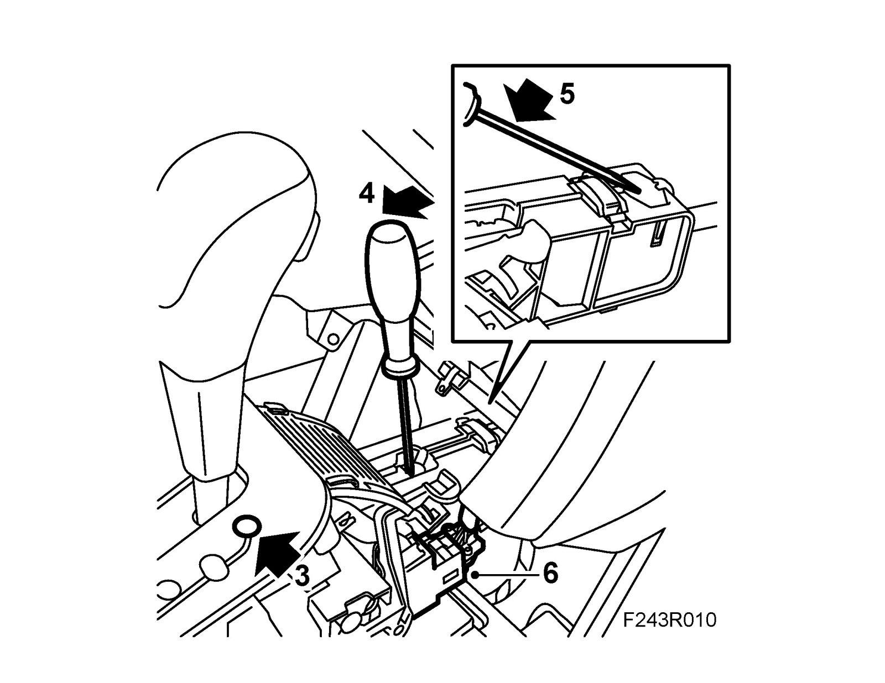
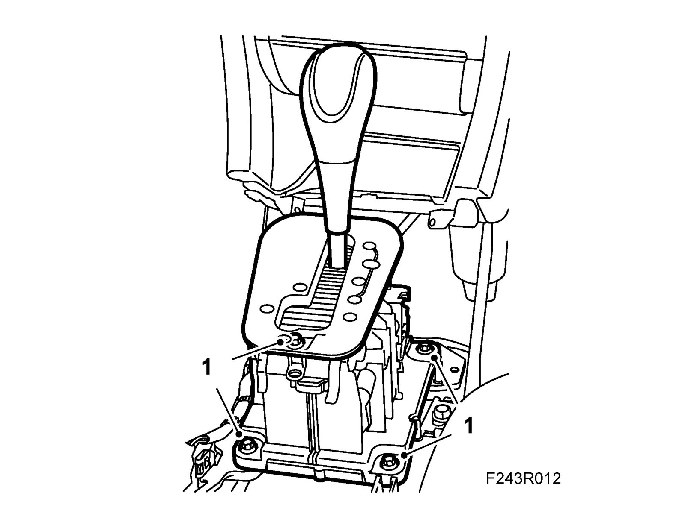
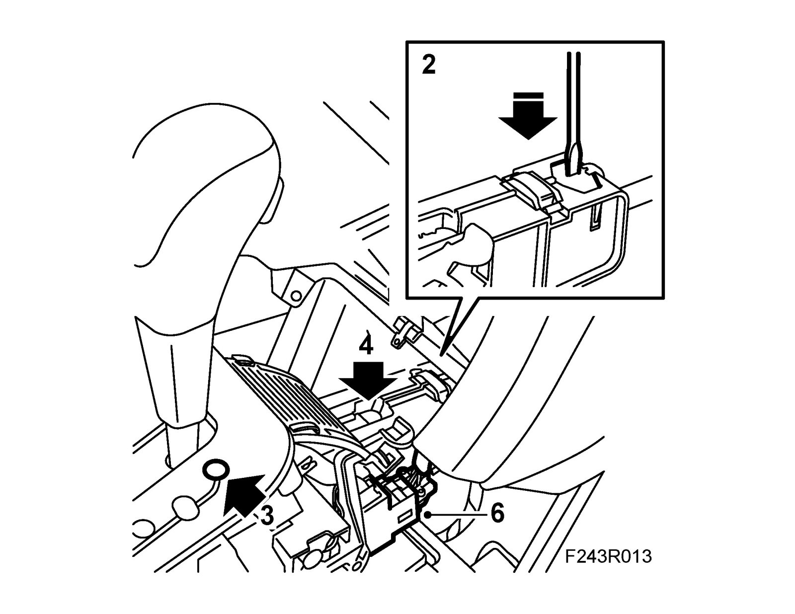

Selector Lever Housing
Selector lever housingTo remove
1. Remove the Center console.
2. Remove the air duct.
3. Put the selector lever in P position.

4. Carefully loosen the cable adjuster using a screwdriver.
5. Loosen the gear cable sheath from the gear lever housing. Lift the lock brace.
6. Remove the connector from the selector lever housing.
7. Remove the selector lever housing.
To fit
1. Insert the cable and fit the selector lever housing.
Tightening torque 8 Nm (6 lbf ft)

2. Secure the gear cable sheath to the selector lever housing using a screwdriver.

3. Check that the selector lever is in position P and that the selector lever on the transmission is in P position. Rock the backwards and forwards until the parking lock engages.
4. Secure the cable adjuster using a screwdriver.
5. Check the shifting positions.
6. Plug in the connector.
7. Fit the air duct.
8. Fit the Center console.